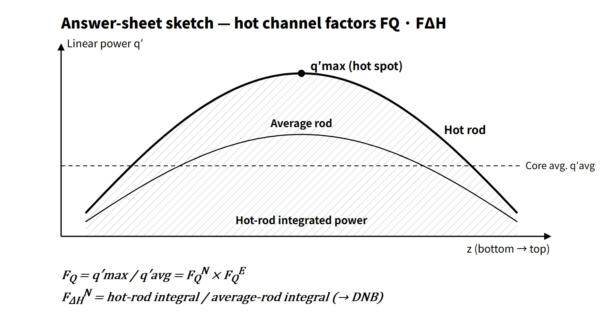

Thermal Hydraulics & Thermodynamics · C-TH-002
Hot Channel Factors (FQ, FΔH) — The Multipliers Linking Average Power to the Hottest Spot
FQ compares the height of the hottest point, FΔH the area under the strongest rod's power curve; both are products of nuclear and engineering factors kept below COLR limits.
A hot channel factor is the ratio of a thermal quantity at the most severe point or channel in the core to its core-average value; it is divided into FQ (the heat flux hot channel factor, based on local heat flux) and FΔH (the enthalpy rise hot channel factor, based on rod-integrated power), and each is built as the product of a nuclear factor and an engineering factor.
A word on terms first. Korean exam questions use several names (literally "hot tube factor", "heat-flow channel factor", "hot flow channel factor" and the English "hot channel factor") for the same thing; this series uses hot channel factor throughout. When looking at a single point we say hot spot; when looking at a whole channel we say hot channel.
Principle and mechanism
Why a multiplier between average and maximum is needed
Core thermal design starts from average power. The thermal power P and the heat transfer area fix the average heat flux, and the number and length of the fuel rods fix the average linear power. Fuel damage limits, however, are reached first at the hottest location, not at the core average. Hence the relations:
- q″max = FQ × q″avg, q′max = FQ × q′avg
- Δh(hot channel) = FΔH × Δh(average channel)
Nuclear and engineering factors
- Nuclear factor (FN): the peaking caused by the non-uniform neutron flux, that is, the power distribution. Under the separability assumption, FQN ≈ FRN (radial, or planar Fxy) × FZN (axial).
- Engineering factor (FE): the allowance for local values exceeding the nominal design because of manufacturing tolerances and flow deviations. It has nothing to do with the neutron flux distribution.
- The total factor is the product of the two effects: FQ = FQN × FQE, FΔH = FΔHN × FΔHE.
For a homogeneous bare cylindrical core, the radial J0 distribution gives FR = 2.32 and the axial cosine FZ = π/2 = 1.57, so FQN is about 3.64. Real cores flatten the power with multi-region enrichment, low-leakage loading, burnable absorbers and reflectors, bringing FQ down to roughly 2–2.5.
What FQ and FΔH measure
- FQ (heat flux hot channel factor): maximum local heat flux in the core ÷ core-average heat flux. It compares the height of one point on the curve. For rods of equal diameter it equals the linear power ratio.
- FΔH (enthalpy rise hot channel factor): axially integrated power of the rod with the highest integrated power ÷ integrated power of the average rod. It compares the area under the curve, and it directly affects the coolant enthalpy rise in the channel next to that rod.
As an example, if the average rod has a chopped cosine shape (peak 1.44) and the strongest rod has 1.55 times the integrated power, then FQN = 1.55 × 1.44 = 2.23. Multiplying by an engineering factor of 1.03 gives 2.30, and further by a measurement uncertainty of 1.05 gives 2.41. The check is whether this value is below the limit (e.g. 2.50).
![Graph of relative linear power against core height from 0 to 3.81 m: the average rod as a chopped cosine with mean 1.00 and peak 1.44 (area A), and the rod with the highest integrated power at 1.55 times the average rod (extra area B), so FΔH = (A + B)/A = 1.55; the hot-spot steps FQ nuclear 2.23 = 1.55 × 1.44, times 1.03 to 2.30 and times 1.05 to 2.41 sit below an example limit CFQ = 2.50; cards define FQ (2.23 × 1.03 = 2.30, related to LOCA peak cladding temperature and fuel melting) and FΔH (related to DNB), with an image of fuel rods](../../assets/images/concepts/c-th-002-hot-channel-factor/fig1-fq-fdh-axial-profile.webp)
What influences the engineering factor
The engineering factor was asked as "influencing factors" in the 2023 exam, session 1. It is easiest to organize as follows.
| Group | Influencing factors | Effect |
|---|---|---|
| FQE (local heat flux) | Deviations in pellet diameter, density and enrichment; cladding outer diameter deviation | Variation of heat generation and heat transfer area at one point |
| FΔHE (channel enthalpy) | Rod-to-rod uranium loading deviation, inlet flow maldistribution, flow redistribution between channels, rod pitch and rod bow | Less flow and more heat input in the hot channel |
| Mitigating effects on FΔHE | Turbulent mixing between channels, mixing-vane spacer grids | Spread hot-channel enthalpy to neighboring channels (act as less than 1) |
In the past all sub-factors were multiplied deterministically, so the engineering factor was large; the FE = 1.75 in the 2015 exam is such a textbook value. In current Westinghouse operating limits FQE is about 1.03, and the flow-related uncertainties are combined into the DNBR limit through statistical thermal design (ITDP, RTDP, and SCU at CE and KEPCO).
What it means in a plant
- Design: at a given safety limit, the allowable average power is roughly the limiting linear power ÷ FQ. Lowering the hot channel factors, that is, flattening the power, is the key to uprating and fuel economy.
- What FQ protects: the peak cladding temperature in a LOCA (1,204 °C) and fuel centerline melting in normal operation and AOOs (linear power limit). The higher the initial linear power, the higher the LOCA PCT.
- What FΔH protects: the DNB design basis (MDNBR ≥ limit, 95/95). Since DNB is also affected by the axial distribution, the roles of the two factors are not completely exclusive.
- Westinghouse-type operation (Kori, Hanbit 1·2, etc.): FQ(Z) and FΔHN are measured with in-core flux maps and compared with the limits in the core operating limits report (COLR), before exceeding 75 % power after refueling and every 31 EFPD thereafter. Between measurements they are controlled indirectly through the axial flux difference (AFD) and the quadrant power tilt ratio (QPTR).
- CE-type operation (OPR1000, APR1400): rather than FQ itself, the linear heat rate (LHR), the planar radial peaking factor Fxy, the azimuthal power tilt and the ASI are limited. COLSS monitors the margins with in-core detectors, and the CPC generates the LPD and DNBR trips.
Regulatory basis
| Basis | Key point |
|---|---|
| NUREG-1431 (Westinghouse STS) LCO 3.2.1 | FQ(Z) ≤ CFQ/P × K(Z) (P > 0.5), CFQ/0.5 × K(Z) (P ≤ 0.5). Example: CFQ 2.40 (Watts Bar Unit 1, early cycles) |
| NUREG-1431 LCO 3.2.2 | FΔHN ≤ FΔHRTP × [1 + PFΔH(1 − P)]. Example: FΔHRTP 1.55–1.65, PFΔH 0.3 |
| COLR measurement corrections | Measured FQ × 1.03 (manufacturing tolerance) × 1.05 (movable detector measurement) = × 1.0815; FΔH measurement 4 % |
| NUREG-1432 (CE STS) 3.2.1–3.2.5 | LHR, Fxy, azimuthal power tilt, DNBR, ASI |
| 10 CFR 50.46 / GDC 10 | ECCS acceptance criteria (PCT 1,204 °C) / SAFDLs not exceeded in normal operation and AOOs |
| NUREG-0800 SRP 4.3 and 4.4 | Review of power distribution, peaking factors and thermal-hydraulic design |
| Korean technical standard rule, Article 2(1)10 and Article 17(1) | Definition of the specified acceptable fuel design limits; adequate design margin |
| Technical specifications and COLR | Limits set per unit and per cycle |
It also helps to remember how the criteria evolved. In the past a single total factor was used (e.g. a "hot tube factor" of 2.4–2.8). After Generic Letter 88-16 in the late 1980s, cycle-specific limits moved from the body of the technical specifications into the COLR. Today they are managed with the axial function K(Z) and power-dependent limits. In South Korea the calculation principle is the same as when the questions were set, but a current answer should state that "the limits are set per unit and per cycle in the COLR".
Easily confused pairs
| FQ | FΔH | Axial peaking FZ | Radial peaking FR (Fxy) | |
|---|---|---|---|---|
| Compares | Maximum local heat flux | Maximum rod-integrated power | Axial maximum/average | Planar maximum/average |
| Nature | One point in 3D | Integral along a rod | 1D | 2D (plane) |
| Main related limit | LOCA PCT, fuel melting | DNB | Managed through AFD and ASI | CE-type LCO |
| Engineering factor | About 1.03 | Combined statistically | None | None |
Key points at a glance
- Definition: hot channel factor = maximum thermal quantity in the core ÷ average value (the various Korean names are synonyms).
- FQ: q″max/q″avg, one point in 3D; FQ = FQN × FQE.
- FΔH: maximum rod-integrated power / average rod-integrated power; hot-channel enthalpy rise.
- Nuclear factor: non-uniform power distribution, FR × FZ (separability assumption); 3.64 for a homogeneous bare core → about 2–2.5 after flattening.
- Engineering factor: pellet diameter, density and enrichment; cladding outer diameter; flow maldistribution, redistribution and mixing; rod bow.
- Basis of the limits: FQ → LOCA PCT and fuel centerline melting; FΔH → DNB (95/95).
- Westinghouse type: FQ(Z) ≤ CFQ/P·K(Z), FΔHN ≤ FΔHRTP[1 + 0.3(1 − P)]; flux maps, AFD, QPTR.
- CE type: LHR, Fxy, ASI; COLSS monitoring; CPC trips.
- Reduction: low-leakage loading, burnable absorbers, rod and boron management.

This is a model answer, not an official solution. It reflects the criteria current as of 2026.
Exam relevance
Hot channel factors have appeared nine times in the Korean Professional Engineer (Nuclear Power) exam: 68th exam, session 2, Q4 (heat transfer area and number of rods from the hot channel factor); 73rd exam, session 1, Q9 (heat flux hot channel factor FQ); 76th exam, session 1, Q5 (hot channel factor); 2008 exam, session 4, Q6 (axial peaking factor with linear power and heat flux); 2010 exam, session 4, Q5 (maximum heat flux of a PWR); 2015 exam, session 2, Q6 (area and number of rods from the hot spot factor); 2017 exam, session 2, Q5 (axial power distribution and heat flux and thermal power calculation); 2023 exam, session 1, Q2 (definition and influencing factors of the engineering hot channel factor); and 2026 exam, session 1, Q6 (definition and components of the heat flux hot channel factor). Short-answer items ask for the definition, the FQ/FΔH distinction and the nuclear × engineering decomposition; every calculation item comes down to the single line "maximum = average × hot channel factor". Check the direction of the multiplication (multiply the average to get the maximum, not the other way round) and whether the problem gives only the nuclear factor or the total.